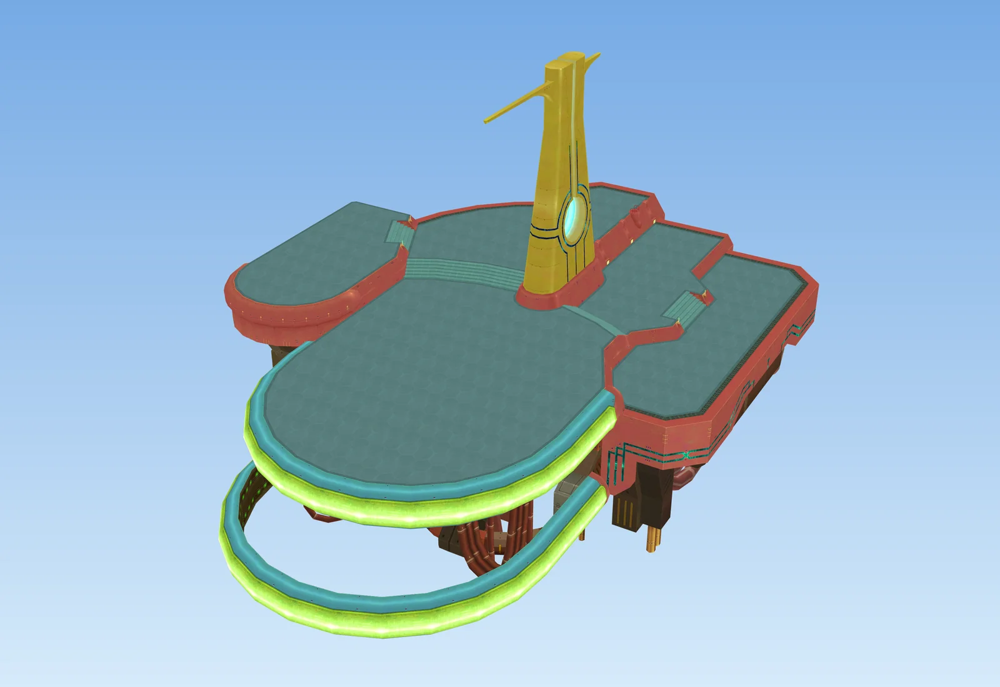
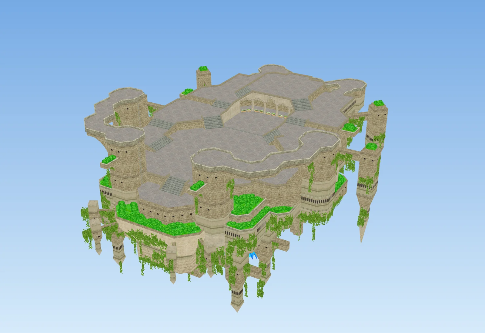

Ring
A Ring is a group of players, like a guild.
Creating a Ring
Talk to the Ring Manager in Uptown. It costs 10,000 G, and the name must be unique.
 Ring Manager
Ring Manager
-
A Ring starts small. It takes more members as its reputation rises, up to 40.
-
Players of any race can be in the same Ring.
-
Ring Recruitment Board 1 and Ring Recruitment Board 2, next to the Ring Manager in Uptown, list Rings that are looking for members.
-
The leader is the ring master. The ring master can choose one submaster and give members permissions: invite, kick, manage the Ring Castle and take items from the Ring warehouse.
- The ring master and submaster can't be kicked.
- To change the ring master, the master hands it over at the Ring Manager, or a member runs for master and wins a 3-day vote.
- If the ring master leaves, the longest member becomes master.
- Ring chat text is green.
 Ring Recruitment Board 1
Ring Recruitment Board 1Ring reputation
Ring reputation goes up when members finish quests, such as the Quest Counter quests from the Cafe Master in any town's Cafe, for example the Cafe in Downtown.
| Reputation | Unlocks |
|---|---|
| 300 | Ring emblem |
| 5,225 | Ring Castle (the ring master must also have finished the Saga 12 story) |
Ring emblem
At 300 reputation your Ring can show an emblem next to members' names.
- The picture must be 24 × 24 pixels, saved as PNG.
- Use pure magenta (red 255, green 0, blue 255) for transparent parts.
- Put the file in the game folder
data\sprite\emblem, then open the Ring window (Ctrl+R), press the Ring info button and pick the picture.
Ring Castle
The Ring Castle is a flying castle that belongs to the whole Ring. It holds up to 27 members.


-
After unlocking it, talk to Dan in Fareast City to collect the castle parts.
 Dan
Dan
Expansion Points
Expansion Points level up the castle, add booths and unlock upgrades. Check them in the Friend List under Ring.
| How | Points | Daily limit |
|---|---|---|
| A member visits another Ring's castle | +1 per visitor | 40 |
| An outsider visits your castle | +1 per visitor | 50 |
| A member talks to another Ring's crops | +2 per crop | 80 |
| An outsider talks to your crops | +2 per crop | 100 |
| An outsider buys from your members' booths | price ÷ 1,000 gold | 100 |
Booths
- Members can set up shop booths outside on the castle deck, not inside the house.
- Changing a booth's shop settings costs 5 Expansion Points each time.
- After setting up a shop, line up the goods at least once. Goods appear 60 minutes later. Until then, outsiders' purchases give no points.
The castle also has a farm. See Farming.